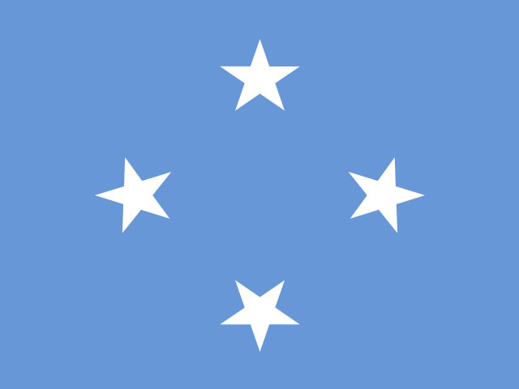
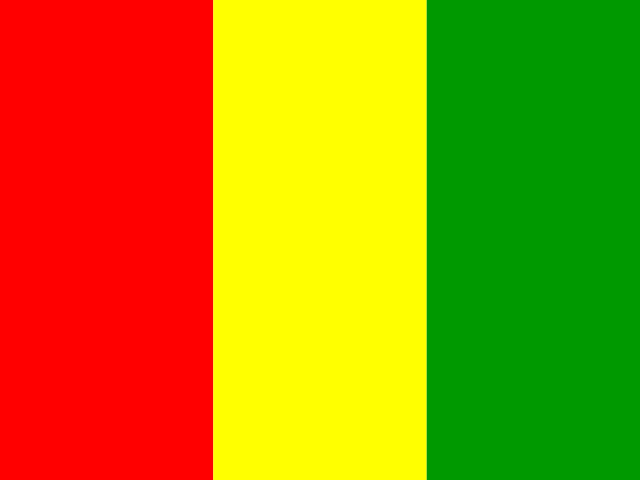
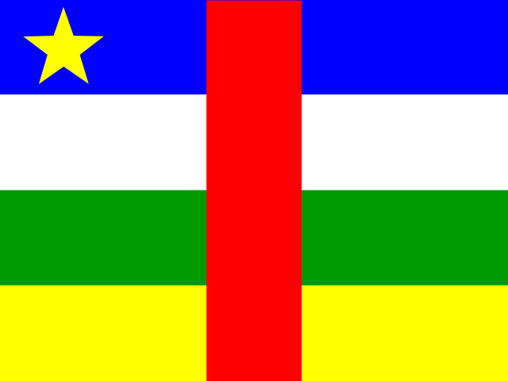

Question 91

Flag / Country🟩 Independent
Your answer: estoniaCorrect: Estonia
Capital🟩 Independent
Your answer: tallinCorrect: Tallinn
Language🟩 Independent
Your answer: estonianCorrect: Estonian
tallin accepted as Tallinn spelling
Batch 10 · Q91–Q100 · 25 October 2026 · 30/30 Independent
| Score | Flags / Country | Capitals | Languages |
|---|---|---|---|
| Pure | 10/10 (100%) | 10/10 (100%) | 10/10 (100%) |
| Pure + Assisted | 10/10 (100%) | 10/10 (100%) | 10/10 (100%) |
| Independent | 10 | 10 | 10 |
| Assisted | 0 | 0 | 0 |
| Wrong | 0 | 0 | 0 |
| Cancelled | 0 | 0 | 0 |
| Score | Flags / Country | Capitals | Languages |
|---|---|---|---|
| Pure | 100/100 (100%) | 100/100 (100%) | 100/100 (100%) |
| Pure + Assisted | 100/100 (100%) | 100/100 (100%) | 100/100 (100%) |
| Independent | 100 | 100 | 100 |
| Assisted | 0 | 0 | 0 |
| Wrong | 0 | 0 | 0 |
| Cancelled | 0 | 0 | 0 |
tallin accepted as Tallinn spelling

Accepted independently

Accepted independently

Initial Mali/Bamako corrected to Guinea/konakry without help; Conakry phonetic accepted

Accepted independently

English corrected to French without help; central africa/banguai accepted

laotian accepted for Lao

bahmas accepted as recognizable Bahamas spelling

Accepted independently

Accepted independently
| Q | Your Country | Correct Country | Flag | Your Capital | Correct Capital | Capital | Your Language | Correct Language(s) | Language |
|---|---|---|---|---|---|---|---|---|---|
| 91 | estonia | Estonia | 🟩 Independent | tallin | Tallinn | 🟩 Independent | estonian | Estonian | 🟩 Independent |
| 92 | micronesia | Micronesia | 🟩 Independent | palikir | Palikir | 🟩 Independent | english | English; Chuukese; Pohnpeian; Kosraean; Yapese (local) | 🟩 Independent |
| 93 | greece | Greece | 🟩 Independent | athens | Athens | 🟩 Independent | greek | Greek | 🟩 Independent |
| 94 | guinea | Guinea | 🟩 Independent | konakry | Conakry | 🟩 Independent | french | French | 🟩 Independent |
| 95 | papua new guinea | Papua New Guinea | 🟩 Independent | port moresby | Port Moresby | 🟩 Independent | english | English; Tok Pisin; Hiri Motu | 🟩 Independent |
| 96 | central africa | Central African Republic | 🟩 Independent | banguai | Bangui | 🟩 Independent | french | Sango; French | 🟩 Independent |
| 97 | laos | Laos | 🟩 Independent | vientiane | Vientiane | 🟩 Independent | laotian | Lao | 🟩 Independent |
| 98 | bahmas | Bahamas | 🟩 Independent | nassau | Nassau | 🟩 Independent | english | English | 🟩 Independent |
| 99 | jamaica | Jamaica | 🟩 Independent | kingston | Kingston | 🟩 Independent | english | English; Jamaican Patois (spoken) | 🟩 Independent |
| 100 | bulgaria | Bulgaria | 🟩 Independent | sofia | Sofia | 🟩 Independent | bulgarian | Bulgarian | 🟩 Independent |
All 30 answers Independent, no clues. Q94 Guinea/konakry corrected from Mali/Bamako; Q96 French corrected from English without help. Original attempts are preserved in the official report JSON.
100 / 195 countries · Batch 10 of 20 complete · 95 remaining
Combined Pure 300/300: Flags 100/100; Capitals 100/100; Languages 100/100.